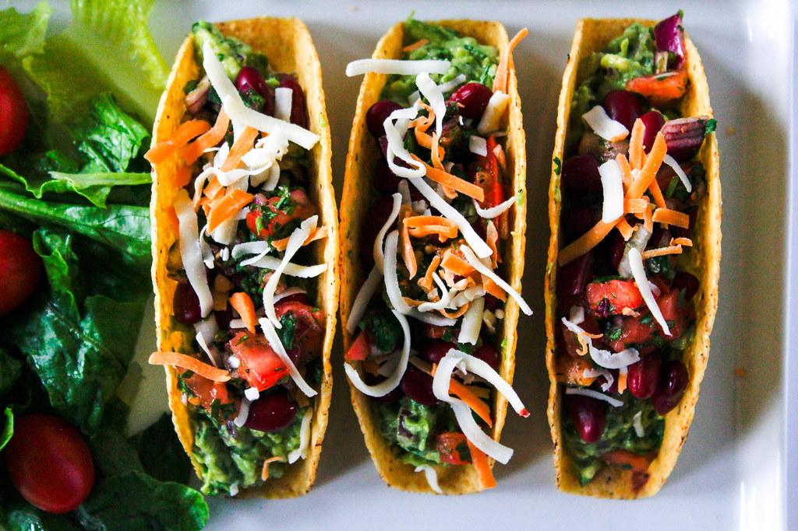

Vegetable Tacos

Ingredients
- 1 red bell pepper
- ½ of a red onion
- EVOO
- 1 Tbs of cumin
- 1 tsp of smoked paprika
- 1 tsp of chili powder
- ½ tsp of cayenne pepper
- Salt
- Pepper
- 3 corn tortillas
- Spinach
- ½ of an avocado
Instructions
- Preheat a skillet and 2 Tbs of EVOO on medium heat
- Slice the bell pepper and red onion into thin pieces
- Add vegetables to the skillet with spices
- Mix all of the vegetables and spices in pan
- Cook for about 8-10 minutes until the vegetables are soft
- Mix about every 2 minutes
- Heat the corn tortillas in the microwave for about 10-15 seconds
- Add spinach to each tortilla
- Add vegetables to tacos
- Top each taco with slices of avocado
- ENJOY!